Bloco 01 · Cultura / Rua / Estilo
01
QUAL MENTIRA
VOU ACREDITAR
VOU ACREDITAR
Paleta
Preto Base #080808
Concreto #2E2E2E
Cinza Bruto #8A8A8A
Laranja Acento #E05C1A
Creme #F2EDE4
Conceito
Abertura do show. A música começa com um sample de rádio — daí o Loop 1. Os outros três loops são o cenário: a arquitetura brutalista de São Paulo, o concreto do entorno do metrô São Bento como ambiente vivo. Não realismo — o concreto se desconstrói, dobra, pulsa. São Paulo onírica e pesada ao mesmo tempo.
4 Loops + Prompts
Loop 1
Sample de Rádio
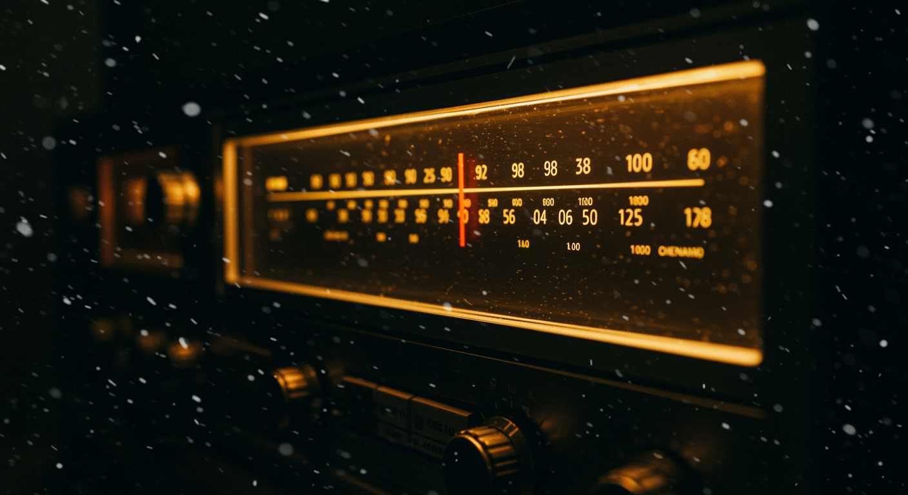
Referência direta ao sample de abertura. Dial analógico varrendo frequências. Noise, interferência, glitch de VHS. O sinal se estabiliza e o show começa.
Frame Estático
Vintage analog FM radio receiver, tuner frequency dial with individual numbers 88 90 92 94 96 98 100 102 104 106 108 evenly spaced across the scale, red needle stopped at 106.7, warm amber backlight glowing behind the dial, VHS scanlines overlay, white noise particles floating, dark night atmosphere, slight chromatic aberration, raw film grain, cinematic still
Animação
Vintage analog radio dial, frequency needle slowly scanning through static noise, VHS scanlines flickering, electromagnetic interference patterns forming and dissolving, white noise particles drifting, orange numbers pulsing, seamless loop, slow hypnotic movement, dark cinematic atmosphere --ar 16:9
Loop 2
Concreto Vivo

A superfície do concreto brutalista de São Paulo respira e pulsa como se fosse orgânico. Fissuras se abrem e fecham. Manchas de umidade formam padrões que aparecem e somem.
Frame Estático
Extreme close-up of São Paulo brutalist concrete wall, São Bento metro area architecture, raw texture with deep moisture stains and hairline cracks, dramatic single light source from below casting hard shadows, monolithic and still, dark cinematic, no people
Animação
Extreme close-up of São Paulo brutalist concrete surface slowly breathing and pulsing like living skin, cracks organically opening and closing in rhythm, moisture stains morphing into abstract map-like patterns and dissolving back, subtle slow camera push-in, seamless loop, dark cinematic lighting, no people, São Bento metro area --ar 16:9
Loop 3
Escadaria Infinita

A escadaria brutalista do entorno do São Bento não tem topo. Câmera sobe eternamente — Escher meets concreto paulistano. A cidade aparece, desaparece, reaparece maior.
Frame Estático
São Paulo brutalist concrete staircase seen from below looking up, raw concrete steps receding into darkness, São Paulo skyline barely visible at the top, single dramatic light source, Escher-like impossible depth, no people, dark overcast sky, monumental scale
Animação
Camera ascending eternally up a São Paulo brutalist concrete staircase, Escher-like impossible loop, São Paulo skyline appearing at the top then disappearing as the staircase resets seamlessly, raw concrete steps, single dramatic light, no people, dreamlike surreal movement, seamless infinite loop --ar 16:9
Loop 4
Praça Dobrada

O Vale do Anhangabaú se dobra sobre si mesmo. Olho de peixe extremo. A praça vira túnel, vira esfera, vira nada — o concreto fragmenta em partículas e se remonta. Sonho lúcido em São Paulo.
Frame Estático
São Paulo Vale do Anhangabaú brutalist plaza shot with extreme fisheye lens, curved concrete architecture bending space, São Paulo skyline warped in background, dark overcast sky, no people, impossible geometry, surreal dreamlike still frame, monumental scale
Animação
São Paulo Vale do Anhangabaú brutalist plaza folding onto itself in extreme fisheye, concrete architecture morphing into a tunnel then a sphere then fragmenting into particles and seamlessly reassembling, lucid dream surreal loop, no people, São Paulo skyline warping in background, impossible geometry, seamless loop --ar 16:9
02
ESTILO
CACHORRO
CACHORRO
Paleta
Preto #080808
Asfalto #1A1A1A
Sódio #E05C1A
Âmbar #FFCC44
Névoa #C8C8C8
Conceito
Noite paulistana de sexta. Ed Rock na rua, a polícia de olho, o chamado da balada. A música é sobre navegar o jogo social da noite — com ironia e estilo. Cenário: rua molhada, luz de sódio, botequim, moto, clube. Tudo à noite, tudo em movimento.
Loops + Prompts
Loop 1Rua Molhada
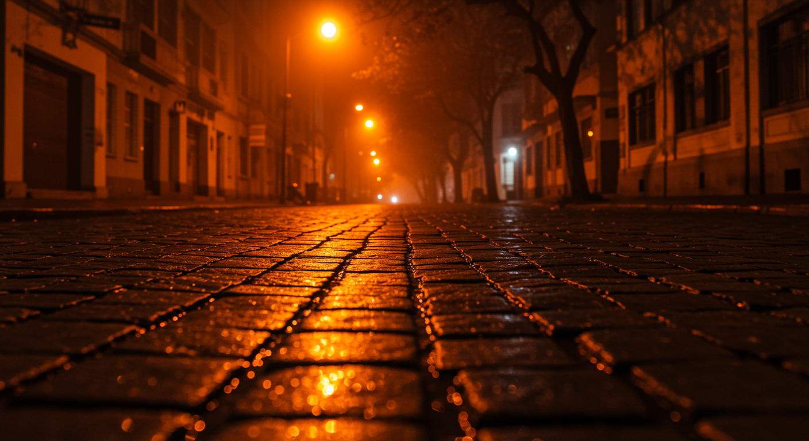
Vista rasante de calçada de paralelepípedo molhada. Luz de sódio laranja refletindo em poças. SP de madrugada, sem pessoas. Câmera desliza lentamente.
Frame Estático
Low angle view of wet cobblestone street São Paulo at 3am, orange sodium vapor lamp reflections pooling in puddles, thin urban fog, no people, hyper-textured asphalt, extreme cinematic grain, noir atmosphere, deep shadows
Animação
Low angle camera slowly gliding over wet São Paulo cobblestone street at night, orange sodium light reflections rippling in puddles, thin fog drifting across frame, no people, seamless loop, cinematic grain --ar 16:9
Loop 2Farol na Névoa
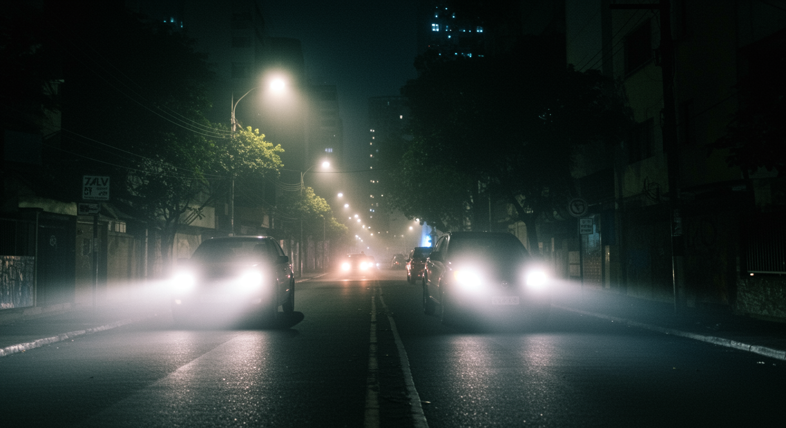
Par de faróis cortando névoa urbana de SP. Luz branca dura rasgando fumaça. Câmera fixa, o carro avança lentamente e some. Loop com o ciclo se repetindo.
Frame Estático
Two car headlights cutting through dense urban fog in a narrow São Paulo street at night, hard white light beams against deep black shadows, bokeh city lights behind, heavy 35mm film grain, cinematic noir still
Animação
Two car headlights slowly approaching through dense São Paulo urban fog at night, light beams cutting through smoke, car passes and disappears, seamless loop, cinematic noir, heavy grain --ar 16:9
Loop 3Bar da Esquina
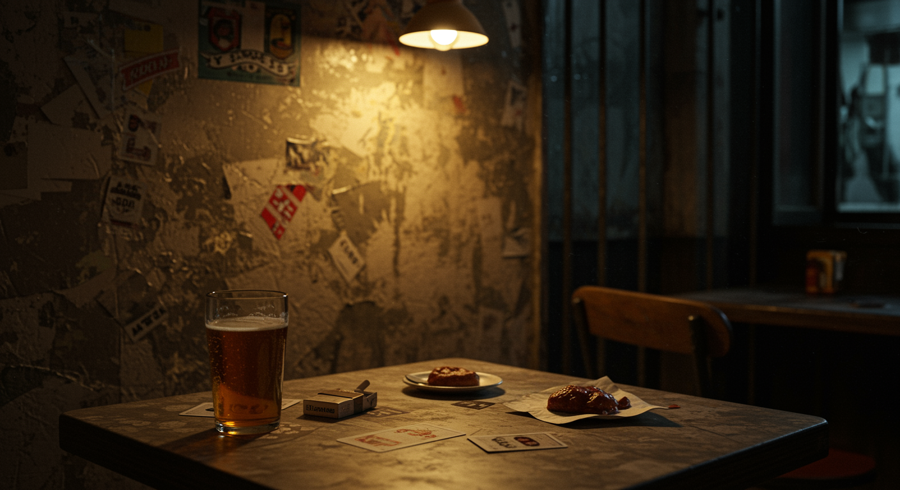
Interior de botequim paulistano — mesa de mármore, grade de ferro, letreiro pintado à mão. Luz quente e suja. Câmera levemente instável, como quem observa sem ser visto.
Frame Estático
Interior of a worn-down São Paulo botequim bar at night, cracked formica tabletop in foreground, beer in a cheap Brazilian tumbler glass half full, greasy coxinha on a paper napkin, worn playing cards scattered, crushed cigarette pack and ashtray overflowing, stained walls with peeling paint, no text, single bare bulb casting dirty yellow light, poverty and dignity, gritty documentary photography, heavy film grain, shallow depth of field
Animação
Inside a São Paulo botequim bar at night, slow subtle camera drift observing the space, warm dirty light flickering slightly, iron bars shadows moving on wall, seamless loop, gritty documentary style --ar 16:9
Loop 4Moto na Madrugada
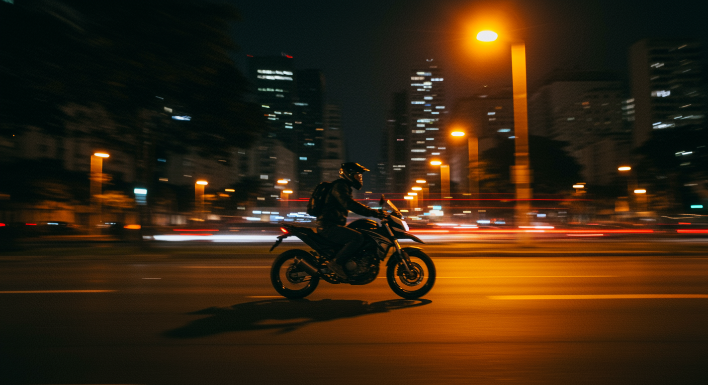
Moto 900 cortando avenida paulistana vazia de madrugada. POV do piloto ou câmera lateral. Luzes da cidade em bokeh. Velocidade e liberdade noturna.
Frame Estático
Motorcycle speeding down empty São Paulo avenue at 3am, city lights bokeh in background, motion blur on wheels, rider silhouette, orange sodium streetlamps, cinematic still, heavy grain
Animação
POV motorcycle riding through empty São Paulo avenues at night, city lights streaking into bokeh, seamless loop, orange and white light trails, cinematic grain, freedom and speed feeling --ar 16:9
03
ARO 20
Paleta
Preto Studio #050505
Chrome #C0C0C0
Luz #F5F5F5
Laranja #E05C1A
Ferro #2A2A2A
Conceito
A letra fala de noite, carro, mulher, estilo. O aro 20 é o símbolo central — chrome como identidade, reflexo como verdade distorcida. A roda gira, a cidade se reflete nela. Velocidade não é pressa, é estilo de vida.
Loops + Prompts
Loop 1Roda Girando
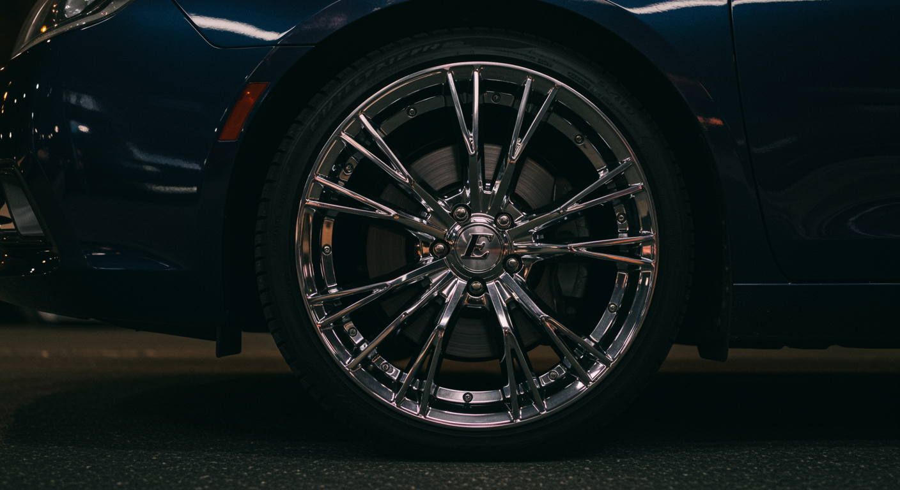
Rim cromado 20" girando em câmera lenta. Fundo preto absoluto. Reflexo de luz branca percorrendo a superfície espelhada. Loop perfeito e hipnótico.
Frame Estático
Low side angle close-up of a chrome 20 inch rim mounted on a car, full wheel and tire visible, bold letter E on the center cap in sharp focus, car body barely visible above, parked on dark asphalt at night, dramatic side light catching the chrome spokes, cinematic still, heavy film grain
Animação
Chrome 20 inch rim spinning in slow motion on pure black background, white light streak continuously sweeping across polished surface, seamless loop, hypnotic metallic reflection --ar 16:9
Loop 2SP no Chrome

Skyline de São Paulo refletida e distorcida na superfície cromada da roda. Efeito espelho convexo. Cidade deformada mas reconhecível.
Frame Estático
São Paulo nighttime skyline impossibly warped across a polished chrome car wheel, extreme fisheye convex distortion, skyscrapers bent into spirals, sodium orange city lights smeared into abstract streaks, no people, pure black background, the city folds and collapses into the center of the chrome, surreal and psychedelic reflection, ultra high contrast, silver and deep orange palette
Animação
São Paulo skyline slowly rotating inside a chrome car wheel convex reflection, city lights warping and morphing as the rim turns, seamless loop, surreal urban mirror --ar 16:9
Loop 3Túnel de Luz
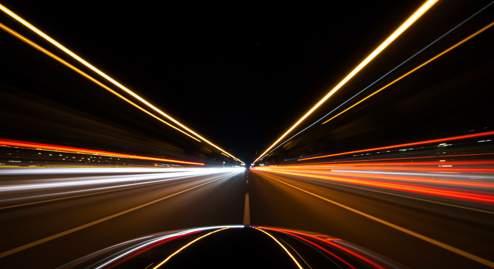
Long exposure de rua noturna do interior do carro em movimento. Trilhas de faróis formando túnel de luz branca e laranja. Infinito, sem corte.
Frame Estático
Long exposure photography from inside a moving car at night in São Paulo, trails of white and orange headlights forming a light tunnel, deep black background, motion blur, speed aesthetic
Animação
Infinite light tunnel from inside a moving car at night, white and orange light trails streaming past, seamless loop, no beginning no end, pure speed and light --ar 16:9
Loop 4Detalhe Mecânico

Câmera percorre em macro os detalhes mecânicos da roda — parafusos, pinça de freio, borracha do pneu. Chrome e borracha preta. Música de detalhes que poucos notam.
Frame Estático
Cinema 4D mograph render of chrome car rims multiplied in a kaleidoscope pattern, dozens of spinning wheels tiling into infinity, reflective metallic spokes catching neon orange and white light, dark void background, motion blur trails, abstract geometric symmetry, 3D render aesthetic, loopable motion graphics, high gloss chrome surfaces, hyper detailed
Animação
Slow macro camera drift across chrome wheel mechanical details, bolts, brake caliper, tire rubber, seamless loop exploring surface texture, industrial beauty, black background --ar 16:9
04
SPECIAL
Paleta
Noite #0D0D0D
Candy Apple #8B1A1A
Cali Gold #E8A020
Roxo Sunset #5A3A6A
Creme #F2EDE4
Conceito
G-Funk puro — a influência West Coast do Ed Rock. Impala, palmeiras, pôr do sol californiano, cultura lowrider. Visualmente é o bloco mais colorido e quente do show. Um respiro de prazer antes do peso do Bloco 2.
Loops + Prompts
Loop 1Lowrider Bounce
O bounce como onda. Gradiente vermelho candy apple que pulsa, comprime e expande — só energia, cor e ritmo.

Frame Estático
Abstract gradient wave frozen mid-pulse, deep candy apple red bleeding into black, thin gold line cutting through the color field like a horizon, pure color abstraction, no objects, high gloss finish aesthetic, ultra cinematic
Animação
Abstract candy apple red gradient rhythmically pulsing and compressing like a wave, thin gold line oscillating through the color mass, seamless loop, pure color no objects --ar 16:9
Loop 2Sunset Palms
O céu californiano sem palmeiras, sem horizonte. Só o gradiente — laranja quente sangrando em roxo escuro — como uma tela viva.

Frame Estático
Tall vertical shafts of amber light cutting through deep violet atmosphere, abstract light rays that suggest height and warmth without depicting any object, strong directionality from below, golden backlight bleeding into purple darkness, dust particles suspended in the light beams, cinematic depth, no silhouettes no horizon, pure light and atmosphere
Animação
Abstract warm orange color field slowly bleeding into deep violet, the gradient breathing and shifting like a living atmosphere, no objects no silhouettes, seamless loop, Rothko-like luminous abstraction --ar 16:9
Loop 3Arte Muralista
A densidade ornamental muralista como campo abstrato. Vermelho e ouro em padrão simétrico infinito — sem rosto, sem texto, só a gramática da cor.

Frame Estático
Abstract symmetrical gradient pattern, deep crimson red and gold tones layered in dense ornamental rhythm, no text no faces no objects, pure color density and warm tonal contrast, full frame abstract composition, rich and saturated
Animação
Abstract crimson and gold gradient field slowly rotating and shifting in dense symmetrical rhythm, no objects no text, pure warm color abstraction, seamless loop --ar 16:9
Loop 4Chrome e Ouro
Prata e ouro como luz pura. Sem superfície, sem objeto — só o gradiente frio do chrome encontrando o calor do ouro no escuro.

Frame Estático
Flowing ribbons of liquid chrome and molten gold intertwining in deep black space, organic curved forms with high reflectivity, silver and gold strands catching and refracting light, abstract but with clear shape and movement, no recognizable objects, macro liquid metal aesthetic, ultra cinematic, high contrast
Animação
Abstract cold silver and warm gold gradient slowly shifting and breathing against deep black, no objects no surfaces, pure luminous color transition, seamless loop --ar 16:9
Bloco 02 · Origem / Identidade
05
DE ONDE
EU VENHO
EU VENHO
Paleta
Terra #1A0E00
Ouro #C9A84C
Barro #8B5E3C
Papel #F2EDE4
Mogno #2D1A0A
Conceito
Virada do show. Ed Rock fala de raiz, samba, música negra brasileira. Ancestralidade afro-brasileira como força. Visualmente: xilogravura de cordel — traço de J. Borges, preto no creme, corte duro. Família, raiz, travessia e percussão como gravura popular nordestina. A diáspora contada em madeira entalhada.
Loops + Prompts
Loop 1Arquivo

Família reunida em cena de folheto de cordel. Xilogravura simples, traço naïf, preto no creme. Ancestralidade popular.
Frame Estático
J. Borges style xilogravura, Black Afro-Brazilian family gathered, angular woodcut marks, crude carved lines, flat black shapes with sharp cut edges, cream paper, high contrast, no photography, no illustration
Animação
J. Borges style xilogravura, Black Afro-Brazilian family gathered, angular woodcut marks, crude carved lines, flat black shapes, cream paper, high contrast, seamless loop, subtle breathing movement
Loop 2Raiz Viva

Árvore com raízes expostas em cordel. Traço simples, naïf, preto no creme. A raiz como símbolo de origem.
Frame Estático
J. Borges style xilogravura, large tree with massive exposed roots, angular woodcut marks, crude carved lines, flat black shapes with sharp cut edges, cream paper, high contrast, no photography, no illustration
Animação
J. Borges style xilogravura, large tree with massive exposed roots, angular woodcut marks, crude carved lines, flat black shapes, cream paper, high contrast, seamless loop, roots slowly expanding
Loop 3O Retrato
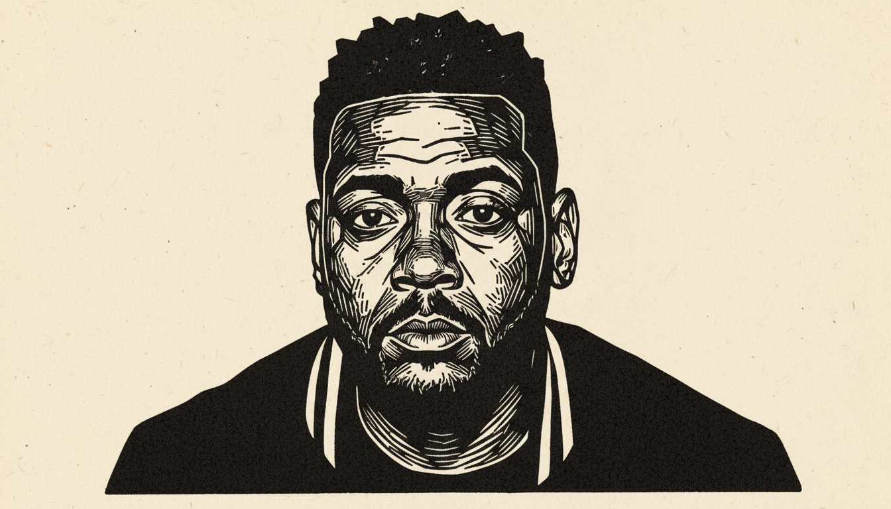
Ed Rock em close frontal — olho no olho. Plano fechado em xilogravura de cordel. O herói da história, gravado em madeira.
Frame Estático
J. Borges style xilogravura, close-up portrait of a Black Brazilian man staring directly at camera, tight framing, angular woodcut marks, crude carved lines, flat black shapes with sharp cut edges, cream paper, high contrast, no photography, no illustration
Animação
J. Borges style xilogravura, close-up portrait of a Black Brazilian man staring directly at camera, tight framing, angular woodcut marks, crude carved lines, flat black shapes, cream paper, high contrast, seamless loop, subtle pulse
Loop 4Percussão Ancestral
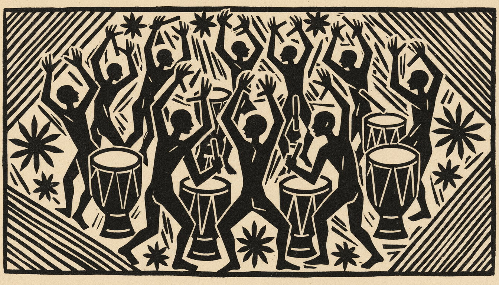
Roda de tambor em cordel. Figuras com braços erguidos, atabaque, movimento. Traço naïf direto, preto no creme.
Frame Estático
J. Borges style xilogravura, Black Afro-Brazilian figures playing drums in a circle arms raised, angular woodcut marks, crude carved lines, flat black shapes with sharp cut edges, cream paper, high contrast, no photography, no illustration
Animação
J. Borges style xilogravura, Black Afro-Brazilian figures drumming in a circle arms raised, angular woodcut marks, crude carved lines, flat black shapes, cream paper, high contrast, seamless loop, figures in rhythmic motion
06
PARANOIA
Paleta
Abismo #060810
Azul Fundo #0A1628
Azul Vigia #1E4060
Ouro Alerta #C9A84C
Flash #FFFFFF
Conceito
A música fala do crack, da escuridão, do vício como buraco sem fundo. Visualmente é a mais sombria do show. Estética VHS destruído — fita danificada, glitch pesado, estática analógica, vigilância suja. A cidade registrada em câmera podre. Nada é nítido. Tudo vaza, distorce, corrompe.
Loops + Prompts
Loop 1CCTV
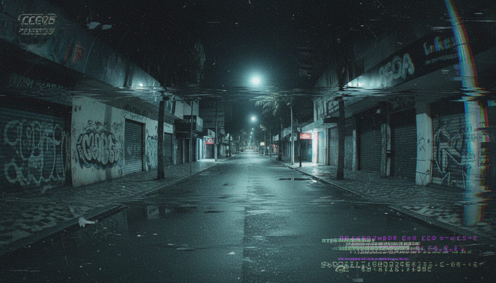
POV câmera de segurança oscilando sobre rua vazia de SP. Timestamp piscando. Ruído analógico pesado. A sensação de ser sempre observado.
Frame Estático
Damaged VHS footage of CCTV surveillance camera POV, empty São Paulo street at night, extreme tracking errors, heavy scanlines, color bleeding, corrupted timestamp glitching, chromatic aberration, analog static bursts, tape damage artifacts, cold blue-green tones, no clean image
Animação
Damaged VHS CCTV footage slowly panning São Paulo street at night, heavy tracking errors flickering, scanlines rolling, signal corruption bursts, glitching timestamp, seamless loop, dirty analog aesthetic
Loop 2Grades e Muros

Muros e portões de SP à noite em fita VHS destruída. Quase monocromático. A cidade que aprisiona sem cara de presídio.
Frame Estático
VHS glitch, São Paulo alley walls and locked gates at night, heavy analog distortion warping concrete, scanlines cutting through frame, signal dropout black bands, almost monochrome desaturated cold grey, minimal color, analog noise, dirty tape damage, claustrophobic urban paranoia
Animação
VHS damaged footage drifting through São Paulo alley walls and locked gates, tracking error lines rolling, signal dropout bands flickering, almost monochrome desaturated grey, seamless glitch loop, dirty tape damage
Loop 3O Rosto
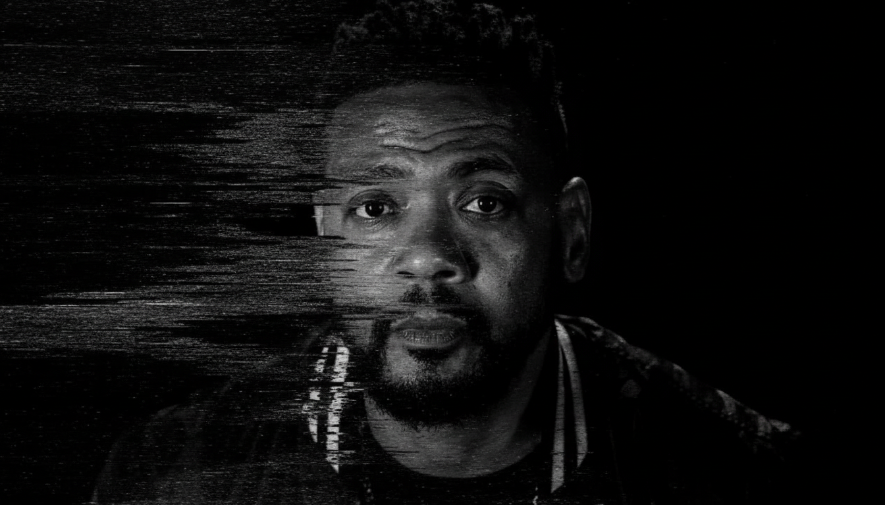
Ed Rock em close extremo destruído por glitch brutal. Fita podre, sinal morto. O rosto como campo de batalha analógico.

Frame Estático
VHS brutal glitch, extreme close-up of a Black man's face on pure black background, heavy chromatic aberration splitting the face, frame tearing, scanlines crushing the image, signal dropout eating half the frame, datamosh pixel corruption, black and white only, zero saturation, monochrome, no color, total signal destruction, heavily degraded tape, image barely readable, corrupted beyond recognition, maximum noise and static, rotten analog decay
Animação
VHS brutal glitch, extreme close-up of a Black man's face on pure black background, frame tearing, scanlines crushing, signal dropout flickering, datamosh corruption, monochrome zero saturation, rotten analog decay, seamless loop
Loop 4Poço Fundo

Vista de dentro de um poço olhando para cima. Luz distante e pequena no topo. Câmera caindo sem fim. Fita destruída, sem cor, sinal morto.
Frame Estático
VHS brutal glitch, POV from inside a deep dark pit looking up, tiny circle of cold light far above, walls corrupted by heavy analog distortion, scanlines crushing the depth, signal dropout eating the image, black and white only, zero saturation, monochrome, maximum tape damage static, heavily degraded footage, image barely readable, rotten analog decay, surreal claustrophobic descent
Animação
VHS brutal glitch, slowly falling down an endless dark pit, tracking error bands rolling, signal dropout flickering black, monochrome zero saturation, maximum tape damage, rotten analog decay, seamless claustrophobic descent loop
07
PARTICIPAÇÃO
MUZZIKE
MUZZIKE
— link em breve —
Paleta
Void #050505
Roxo #1A0030
Ouro #C9A84C
Ciano #00CCFF
Rosa #FF3366
Conceito
Trap contemporâneo com participação. Estética digital, 808 como força visual. O encontro do clássico com o novo — Ed Rock e Muzzike. Energia alta, paleta mais saturada, digital e orgânico colidindo.
Loops + Prompts
Loop 1808 Visualizer
Waveform reagindo ao baixo trap. Barras douradas e ciano pulsando no ritmo. Fundo preto, gradiente roxo sutil. Sincronizado ao BPM.
Frame Estático
Audio visualizer waveform, vertical bars in gold and cyan on pure black background, subtle deep purple glow, music frequency spectrum aesthetic, contemporary hip hop visual identity
Animação
Audio frequency bars pulsing rhythmically in gold and cyan on black background, 808 bass pattern visualization, seamless loop, deep purple radial glow --ar 16:9
Loop 2Glitch Data
Retrato fragmentando em blocos de dados corrompidos, texto ASCII, pixels quebrados. Databend estético. Ouro e ciano sobre preto.
Frame Estático
Digital glitch art portrait decomposing into pixel data blocks and ASCII text, databending aesthetic, gold and electric blue on black, high contrast digital decay, contemporary trap visual
Animação
Portrait continuously fragmenting into and reassembling from digital glitch data, seamless loop, gold and cyan pixel corruption, databend aesthetic --ar 16:9
Loop 3Sampa Wire
Skyline de SP em wireframe 3D girando lentamente. Grade de luz ciano sobre preto. Coordenadas GPS nos edifícios. SP como dado, como código.
Frame Estático
São Paulo skyline as glowing cyan wireframe 3D model on black, GPS coordinates floating near buildings, neo-noir digital aesthetic, grid lines, city as data
Animação
São Paulo wireframe 3D skyline slowly rotating, cyan grid lines on black, data labels appearing and disappearing, seamless loop --ar 16:9
Loop 4Colisão de Gerações
Split ou sobreposição de dois estilos: de um lado estética analógica dos anos 90 (grão, VHS), do outro digital contemporâneo (neon, pixel). Os dois mundos colidindo e se mesclando.
Frame Estático
Split composition, left side VHS analog 90s hip hop aesthetic with grain and scanlines, right side neon digital contemporary trap aesthetic, two eras colliding at center, gold and cyan accents
Animação
Two visual aesthetics morphing into each other, VHS 90s analog transforming into neon digital contemporary, seamless back-and-forth loop, collision of eras --ar 16:9
Bloco 03 · Consciência / Luta / Superação
08
CAPÍTULO 4
VERSÍCULO 3
VERSÍCULO 3
Paleta
Preto #0A0A0A
Vermelho #C0392B
Ouro #C9A84C
Granito #3D3D3D
Creme #F2EDE4
Conceito
A maior música dos Racionais. As estatísticas de abertura ("60% dos jovens de periferia...") são o manifesto. Visualmente é monumental, pesado, bíblico. Tipografia como arma. Concreto e dados. O Opala marrom na rua de SP como ícone.
Loops + Prompts
Loop 1Texto Manifesto
Tipografia pesada cobrindo o frame — as estatísticas da abertura aparecendo palavra por palavra. Fonte serifada bold. Vermelho e creme sobre preto.
Frame Estático
Full frame manifesto typography, bold heavy serif font, words on deep black background, cream and deep red text, political poster aesthetic, grain texture overlay, monumental weight
Animação
Manifesto words appearing one by one on black screen, bold heavy serif typography, cream and red, each word landing with weight, seamless loop --ar 16:9
Loop 2Opala na Rua
Opala marrom na rua de SP de bombeta e moletom — referência direta à letra. Câmera externa, rua fria, neblina. O carro como ícone do rap brasileiro.
Frame Estático
Brown Chevrolet Opala parked on empty São Paulo street at night, cold fog, sodium streetlight, cinematic noir, no people, 1990s Brazilian hip hop aesthetic, film grain
Animação
Brown Opala on empty São Paulo street, fog slowly drifting past, cold sodium light, seamless atmospheric loop, cinematic noir --ar 16:9
Loop 3Monumento
Low angle em estrutura de concreto bruto contra céu escuro. "RACIONAIS" gravado na pedra. Câmera em órbita lenta. Grandiosidade histórica.
Frame Estático
Low angle shot of massive raw concrete monument against dark stormy sky, heavy fog, monumental scale, the word RACIONAIS carved into stone, constructivist composition, dark grey and crimson
Animação
Camera slowly orbiting massive concrete monument with RACIONAIS carved in stone, dark dramatic sky, fog drifting, seamless orbit loop, monumental weight --ar 16:9
Loop 4Farol em Farol
Referência literal da letra — menino vendendo chocolate de farol em farol. Câmera de dentro do carro no sinal vermelho. Chuva fina. Peso social sem sentimentalismo.
Frame Estático
POV from inside a car stopped at a São Paulo traffic light in the rain at night, red light reflecting on wet windshield, blurred figure outside in the rain, cinematic social documentary, grain, no sentimentality
Animação
Rain slowly falling on car windshield at São Paulo traffic light, red light pulsing, blurred figures outside, seamless atmospheric loop, cinematic grain --ar 16:9
09
NEGRO
DRAMA
DRAMA
Paleta
Preto #080808
Vermelho #C0392B
Creme #F2EDE4
Bordô #4A2020
Cinza #888888
Conceito
"Negro drama, entre o sucesso e a lama." A dualidade é o centro — luxo e sofrimento no mesmo frame. Resistência, dignidade, o peso de ser negro no Brasil. Visualmente: alto contraste, luz lateral dura, monumentalidade e humanidade.
Loops + Prompts
Loop 1Punho
Punho erguido em contra-luz dramática. Câmera orbita lentamente. Luz branco-vermelha lateral. Suor visível. Poder e dignidade em silhueta.
Frame Estático
Black raised fist against pure black background, dramatic side lighting, sweat droplets visible, Black Power aesthetic, Gordon Parks photography style, high contrast, crimson red accent light
Animação
Camera slowly orbiting raised Black fist in dramatic side light, sweat catching the light, seamless orbit loop, crimson and black, monumental framing --ar 16:9
Loop 2Dualidade
"Entre o sucesso e a lama" — split visual. Um lado mostra luxo (terno, carro, champagne), o outro mostra periferia (asfalto, grade, pobreza). O mesmo homem nos dois lados.
Frame Estático
Split frame duality, left side Black man in luxury setting with suit and champagne, right side same man in São Paulo periphery street, seamless center divide, high contrast, documentary style
Animação
Split frame slowly shifting between luxury and periphery, same figure in both worlds, seamless morphing loop, success and struggle duality, high contrast --ar 16:9
Loop 3Conjunto Monumental
Conjunto habitacional de SP em low-angle como monumento. Céu dramático. Zoom out lento revelando escala. Dignidade da arquitetura popular.
Frame Estático
São Paulo public housing conjunto habitacional from extreme low angle as if a monument, dramatic storm clouds, black and white documentary photography, monumental dignity, Nelson Kon architectural style
Animação
Slow camera tilt revealing São Paulo public housing block from ground to sky, dramatic clouds moving overhead, seamless loop, monumental scale, black and white --ar 16:9
Loop 4Cabelo Crespo
"Cabelo crespo e a pele escura" — macro extremo em cabelo crespo com luz lateral. Textura como identidade. Beleza como resistência. Quase abstrato.
Frame Estático
Extreme macro of natural Black afro hair texture, dramatic side lighting, each curl catching light, abstract almost, beauty as identity and resistance, dark background, cinematic
Animação
Slow camera drift across afro hair texture in dramatic side light, abstract macro movement, seamless loop, identity and beauty theme --ar 16:9
10
PRETO ZICA
Paleta
Void #030303
Sombra #0D0D0D
Vermelho #C0392B
Cinza #555555
Flash #FFFFFF
Conceito
Submundo, armadilhas, o sistema como teia invisível. Sombras sem corpo, fechaduras bloqueando luz. A paleta mais escura e sufocante do show. Quase monocromática. O momento antes da virada para superação.
Loops + Prompts
Loop 1Teia
Teia de aranha com orvalho em backlight frio. Macro extremo. Câmera empurra lentamente. Armadilha perfeita. Fundo escuro total.
Frame Estático
Extreme macro spider web with dew drops, cold backlight, pure black background, web glowing like silver wires, trap metaphor, ultra sharp, monochrome with blue cast
Animação
Spider web dew drops slowly vibrating in cold backlight, seamless loop, silver threads catching light, dark background, trap and system metaphor --ar 16:9
Loop 2Sombras
Sombras de figuras projetadas em parede de beco. Corpos nunca aparecem. Luz única de fora do frame. Identidade apagada. Ameaça sem rosto.
Frame Estático
Human shadows cast on crumbling São Paulo alley wall, no visible bodies, single harsh light from outside frame, documentary noir, Weegee style, anonymous identity, deep black shadows
Animação
Shadows of unseen figures slowly moving on São Paulo alley wall, seamless loop, faceless threat, single harsh light, deep shadow atmosphere --ar 16:9
Loop 3Fechadura
Buraco de fechadura em close extremo. Metal enferrujado vermelho-escuro. Luz branca vazando pelo outro lado. Liberdade bloqueada.
Frame Estático
Extreme close-up of old rusted keyhole, corroded dark red metal, blinding white light leaking from other side, blocked freedom metaphor, macro photography, crimson and black
Animação
Light pulsing slowly through old rusted keyhole, white glow intensifying and fading, seamless loop, blocked freedom metaphor, macro --ar 16:9
Loop 4Grade de Sombra
Sombra de grade de janela projetada no chão ou parede. Luz de sódio cortando o padrão geométrico. A prisão que não é prisão. Câmera estática, a sombra se move levemente.
Frame Estático
Shadow of iron window bars projected on concrete floor, sodium orange light cutting geometric pattern, invisible prison metaphor, São Paulo periphery, high contrast noir
Animação
Iron bar shadow slowly shifting on concrete floor as light source moves, seamless loop, geometric prison pattern, orange and black, invisible cage metaphor --ar 16:9
11
MÁGICO
DE OZ
DE OZ
Paleta
Terra #1A0E00
Ouro #C9A84C
Verde Oz #3A7D44
Cinza Real #888888
Creme #F2EDE4
Conceito
A letra fala de um jovem na periferia que vê o crack destruir ao redor e pede a Deus para transformar tudo num "Mundo Mágico de Oz". É sonho como resistência, não como fuga. Visualmente: o contraste brutal entre o real e o desejado.
Loops + Prompts
Loop 1Real vs. Sonho
Split vertical: P&B (rua, periferia, crack, lama) vs. cores vibrantes (natureza exuberante, luz, abundância). Linha divisória pulsando levemente.
Frame Estático
Split screen, left half black and white São Paulo periphery poverty and decay, right half vibrant saturated lush green dreamscape, vertical divide at center, Wizard of Oz visual metaphor, Brazilian social contrast
Animação
Split screen vertical divide slowly shifting left and right, black and white reality versus vibrant dream world, seamless loop, contrast pulsing --ar 16:9
Loop 2Vitrine
Referência direta da letra — jovem olhando para vitrine, se vendo refletido nela, imaginando outra vida. O vidro como fronteira entre dois mundos.
Frame Estático
Young Black teenager reflected in a São Paulo shop window at night, his reflection overlapping with store display inside, two worlds separated by glass, documentary photography, cinematic grain
Animação
Reflection in São Paulo shop window slowly morphing between street reality and dream world inside the store, seamless loop, glass as portal between worlds --ar 16:9
Loop 3Crack e Sonho
A pedra como objeto que promete o sonho e entrega a lama. Close em mão estendida — de um lado a pedra, do outro uma luz dourada impossível. Contraditório e verdadeiro.
Frame Estático
Close-up of an open hand, one side holding crack pipe in darkness, other side reaching toward golden light, addiction and dream duality, dramatic contrast, cinematic
Animação
Hand slowly reaching toward distant golden light while darkness pulls it back, seamless loop, addiction and dream tension --ar 16:9
Loop 4Oz Impossível
A periferia de SP se transforma brevemente em paisagem de conto de fadas — prédios viram castelos, asfalto vira grama, céu escuro vira aurora. Dura segundos e desaparece.
Frame Estático
São Paulo periphery skyline halfway transformed into a magical fairytale kingdom, half brutalist concrete half fantasy castle, surreal magical realism, gold and green tones emerging from grey
Animação
São Paulo periphery slowly transforming into magical Oz landscape then reverting back, seamless loop, concrete to fairytale to concrete, magical realism --ar 16:9
12
A VIDA É
DESAFIO
DESAFIO
Paleta
Preto #0A0A0A
Vermelho #C0392B
Aurora #E8A020
Ouro #C9A84C
Creme #F2EDE4
Conceito
Perseverança como estado permanente. "Somos soldados e sobreviventes sempre até o fim." Não é vitória fácil — é resistência contínua. Visualmente: caminhada, subida, mãos de trabalho. O show começa a elevar. Cor aquece progressivamente.
Loops + Prompts
Loop 1Caminhada
Figura de costas caminhando por avenida longa ao amanhecer. Câmera fixa. Nunca para. Loop seamless. Horizonte laranja ao fundo. Perseverança visual.
Frame Estático
Silhouette of lone person walking away down long São Paulo avenue at sunrise, camera static, orange horizon ahead, warm amber and deep shadow, perseverance metaphor, documentary style
Animação
Silhouette walking endlessly toward orange horizon on São Paulo avenue, seamless loop, figure never stops, warm amber light growing ahead --ar 16:9
Loop 2Escada
POV subindo escada de viela de SP. Concreto, plantas nas frestas, luz quente ao topo. Câmera sobe continuamente. Ascensão sem fim — mas com destino.
Frame Estático
POV looking up concrete stairs in São Paulo favela viela, weeds pushing through cracks, warm golden light at top, ascension symbol, textured concrete, documentary realism
Animação
POV continuously ascending São Paulo viela concrete stairs, warm light always ahead, seamless loop, resilience and ascension theme --ar 16:9
Loop 3Mãos da Luta
Close em mãos calejadas de homem negro. Marcas de trabalho, vida escrita na pele. Luz lateral quente revelando cada textura. Dignidade máxima.
Frame Estático
Extreme close-up of worn calloused hands of a Black Brazilian man, life marks visible, warm side lighting, Sebastião Salgado Workers series aesthetic, dignified and monumental, black and gold
Animação
Slow camera reveal across weathered Black hands, warm light shifting across skin texture, seamless loop, dignity and labor theme --ar 16:9
Loop 4Soldados
"Somos soldados e sobreviventes." Marcha — não militar, mas de povo. Silhuetas caminhando juntas em direção à luz. Coletivo e individual ao mesmo tempo.
Frame Estático
Multiple silhouettes marching together toward light on horizon, not military but people, São Paulo periphery setting, warm amber backlight, solidarity and survival, cinematic widescreen
Animação
Silhouettes continuously walking toward amber horizon together, seamless loop, collective march of survivors, warm growing light ahead --ar 16:9
13
THAT'S
MY WAY
MY WAY
Paleta
Cosmos #0A0814
Ouro #C9A84C
Luz Dourada #F5D78E
Branco #FFFFFF
Vermelho #C0392B
Conceito
Encerramento e elevação. "Olhe pra mim e veja o quanto eu andei." Com Seu Jorge — a parceria como símbolo de legado. Visualmente é o momento mais luminoso do show. Partículas de luz, alvorada sobre SP, cosmos sobre a periferia. O show termina em elevação.
Loops + Prompts
Loop 1Ascensão de Luz
Partículas douradas subindo do chão ao infinito. Ritmo respiratório. Espiritual sem iconografia religiosa específica. O mais lento e solene do show.
Frame Estático
Golden luminous particles ascending from ground into infinite darkness, spiritual light aesthetic without religious iconography, James Turrell inspired, deep black background, warm gold glow
Animação
Golden particles continuously rising from darkness into infinity, seamless loop, breathing rhythm, spiritual elevation without religious symbols, warm gold --ar 16:9
Loop 2Alvorada Sampa
Amanhecer sobre o skyline de SP — preto > laranja > dourado > branco. Edifícios emergindo na luz. A vitória do novo dia. Encerramento visual do show.
Frame Estático
Dawn breaking over São Paulo skyline, black to deep gold sky, buildings silhouetted emerging from darkness into light, aerial view, triumph and new beginning, golden hour maximum
Animação
São Paulo skyline slowly illuminating as dawn breaks, black to golden to white, seamless loop of perpetual sunrise, hope and legacy --ar 16:9
Loop 3Cosmos e Periferia
Via Láctea sobre telhados de periferia de SP. Estrelas e luz urbana se confundindo. Zoom out lento do bairro ao cosmos. Grandiosidade final.
Frame Estático
Milky Way arching over São Paulo periphery rooftops at night, astrophotography meets urban documentary, stars and city lights blurring together, profound scale contrast, gold and deep blue
Animação
Milky Way slowly rotating above São Paulo periphery, stars and city lights merging, seamless cosmic loop, scale of universe meeting human scale --ar 16:9
Loop 4Legado
"Nunca abandonei." Mão passando algo invisível — tocha, chama, saber — para outra mão. Continuidade. O show termina com esse gesto. Silencioso e definitivo.
Frame Estático
Two Black hands passing a flame or golden light between them, dark background, legacy and continuity metaphor, warm gold glow illuminating both hands, cinematic dignity
Animação
Golden light slowly passing between two hands, seamless loop of giving and receiving, legacy and continuity, warm glow in darkness --ar 16:9